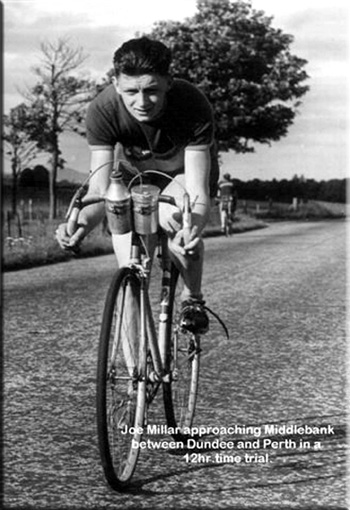
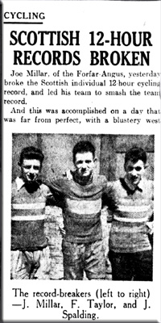

J.B. (Joe) Millar first entered competitive cycling in 1946, when he was talked into taking part in the Angus Cycling Club confined 25 mile race for the club championship. His performance surprised not only the clubmen but himself as well, so he decided then that he would have to get a better bike and started saving up. Late in 1946 he ordered a Flying Scot from Rattray of Glasgow and it was duly delivered early in 1947. Joe then started going for long runs by way of training, and took part in quite a number of time trials in the district, and went on to win the 1947 Dundee and District Middlemarkers Competition, over 10; 25 & 50 miles.
Joe was called up for National Service in 1948 and managed to take his Flying Scot with him and continued training in England, but the bike had to stay at home when he was sent to Egypt. While cycling with Exiles C.C. part of the fraternity of Buckshee Wheelers based in Egypt, Corporal Millar won the Middle East BAR Championship in 1949. Joe says “they trained up and down the canal roads on bikes made up from bits and pieces that the guys managed to gather - they were pretty horrendous but there was some great competition”
After being demobbed at the end of ‘49, Joe got back in training again on his beloved Flying Scot. He persuaded his club mates Joe Spalding, Fin Taylor and Jim Hay to start training seriously with a view to racing, and that season and the next they more or less cleaned up in all the distance races. He led the Angus CC team, with Joe Spalding and Fin Taylor also riding Flying Scot bicycles, to win the 1952 Scottish BAR Team Championship. In doing so they set new Scottish records in the 12 hours, and 100 miles, and broke their own 100 mile record a second time. Joe was also placed 10th in the British B.A.R. Competition that year, and invited to London to collect the certificate awarded to first 12 riders.
In the Scottish Best All Rounder Championships over 50, 100 and 12 hours, Joe Millar first entered the honours list in 6th place in 1950, never fell below that, and finally became Scottish BAR Champion in 1958 with an average speed of 23.236mph, having been runner-up on no less than three occasions in the intervening years. In 1952, 1953, and 1958 Joe set up new Scottish records for the 100 mile event. His latest in 1958 was 4 hours 10 minutes 24 seconds, that’s an average speed of 23.96 M.P.H. But that isn’t all, in 1952, and again in 1955, Joe managed to set up two new Scottish records for the 12 hour, the latest of which was 261.570 miles. That’s an average speed of 21.79 M.P.H.
In 1954 Joe joined the Forfarshire Roads Club and led their team in 1955, which included Ben Balneaves and R Kilhooley, to win the Scottish BAR Team Championship. In the process they set a new 12 hour Scottish and British Team Record of 767.120 miles. [The RTTC (England) did not ratify it as Scotland had broken away from them and joined up with the B.L.R.C. to form the SCU.]
Joe’s story of how he got his 2nd Flying Scot "After a 100 mile race which I won at Glasgow in 1953 Jack Smith of Rattrays approached me and said "are you doing all these times on that old touring frame?" I had never thought of it as "an old touring frame", anyway he said I would like to see you on a more modern bicycle so how about it. I said there's nothing wrong with this one and I can't afford a new one anyway! Would you be willing to pay £5 for a new frame he asked me? I laughed at him, but he was serious and he kept his word. I had very good equipment so it just had to be transferred. That was the bike I used until I retired, the first time, after winning the Scottish BAR in 1958"
|